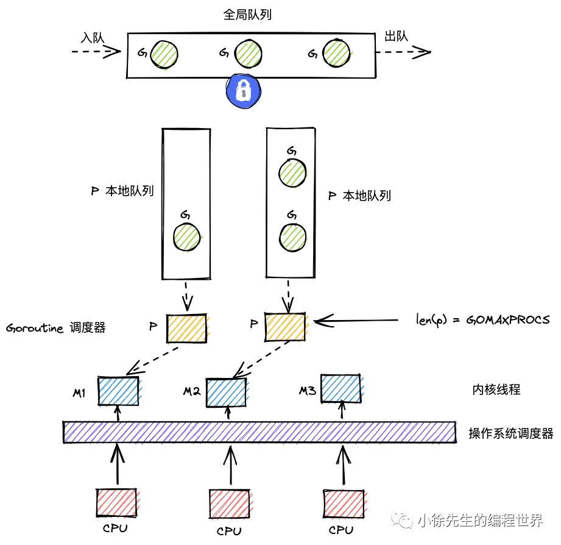

概念梳理
线程
通常语义中的线程，指的是内核级线程，核心点如下：
（1）是操作系统最小调度单元；
（2）创建、销毁、调度交由内核完成，cpu 需完成用户态与内核态间的切换；
（3）可充分利用多核，实现并行.
协程
协程，又称为用户级线程，核心点如下：
（1）与线程存在映射关系，为 M：1；
（2）创建、销毁、调度在用户态完成.实际上是Go代码指针的修改,切换不同协程结构体而已,对CPU来说一直是在跑同一个线程
（3）从属同一个内核级线程，无法并行；一个协程阻塞会导致从属同一线程的所有协程无法执行.
Goroutine
Goroutine，经 Golang 优化后的特殊“协程”，核心点如下：
（1）与线程存在映射关系，为 M：N；
（2）创建、销毁、调度在用户态完成，对内核透明，足够轻便；
（3）可利用多个线程，实现并行；
（4）通过调度器的斡旋，实现和线程间的动态绑定和灵活调度；
（5）栈空间大小可动态扩缩，因地制宜.
GMP模型
gmp = goroutine + machine + processor （+ 一套有机组合的机制），下面先单独拆出每个组件进行介绍，最后再总览全局，对 gmp 进行总述
g
（1）g 即goroutine，是 golang 中对协程的抽象；
（2）g 有自己的运行栈、状态、以及执行的任务函数（用户通过 go func 指定）；
（3）g 需要绑定到 p 才能执行，在 g 的视角中，p 就是它的 cpu.
p
（1）p 即 processor，是 golang 中的调度器；
（2）p 是 gmp 的中枢，借由 p 承上启下，实现 g 和 m 之间的动态有机结合；
（3）对 g 而言，p 是其 cpu，g 只有被 p 调度，才得以执行；
（4）对 m 而言，p 是其执行代理，为其提供必要信息的同时（可执行的 g、内存分配情况等），并隐藏了繁杂的调度细节；
（5）p 的数量决定了 g 最大并行数量，可由用户通过 GOMAXPROCS 进行设定（超过 CPU 核数时无意义）.
m
（1）m 即 machine，是 golang 中对线程的抽象；
（2）m 不直接执行 g，而是先和 p 绑定，由其实现代理；
（3）借由 p 的存在，m 无需和 g 绑死，也无需记录 g 的状态信息，因此 g 在全生命周期中可以实现跨 m 执行.
gmp

GMP 宏观模型如上图所示，下面对其要点和细节进行逐一介绍：
（1）M 是线程的抽象；G 是 goroutine；P 是承上启下的调度器；
（2）M调度G前，需要和P绑定；一个m绑定一个g
（3）全局有多个M和多个P，但同时并行的G的最大数量等于P的数量；
（4）G的存放队列有三类
- P的本地队列
- 全局队列
- wait队列（图中未展示，为io阻塞就绪态goroutine队列）
（5）M调度G时，优先取P本地队列，其次取全局队列，最后取wait队列；这样的好处是，取本地队列时，可以接近于无锁化，减少全局锁竞争；
（6）为防止不同P的闲忙差异过大，设立work-stealing机制，本地队列为空的P可以尝试从其他P本地队列偷取一半的G补充到自身队列.
全局队列:不能满,必须要能够扩容,但是扩容会锁死所有p,所以用链表可以直接挂到末尾.并且如果有移动的话不需要内存拷贝,只需要指针操作.
本地队列:固定长度数组256,因为p访问本地队列非常频繁,一口气加载连续内存的空间局部性比较友好,也没有gc开销
核心数据结构
g
type g struct {
// ...
m *m //负责执行当前g的m
// ...
sched gobuf//gobuffer 存档
// ...
}
type gobuf struct {
sp uintptr //保存 CPU 的 rsp 寄存器的值，指向函数调用栈栈顶
pc uintptr //保存 CPU 的 rip 寄存器的值，指向程序下一条执行指令的地址
ret uintptr //保存系统调用的返回值
bp uintptr // 保存 CPU 的 rbp 寄存器的值，存储函数栈帧的起始位置.
}
const(
_Gidle = itoa // 0 为协程开始创建时的状态，此时尚未初始化完成
_Grunnable // 1 协程在待执行队列中，等待被执行
_Grunning // 2 协程在待执行队列中，等待被执行
_Gsyscall // 3 协程正在执行系统调用
_Gwaiting // 4 协程处于挂起态，需要等待被唤醒. gc、channel 通信或者锁操作时经常会进入这种状态
_Gdead // 6 协程刚初始化完成或者已经被销毁，会处于此状态
_Gcopystack // 8 协程正在栈扩容流程中
_Gpreempted // 9 协程被抢占后的状态
)m
type m struct {
g0 *g // goroutine with scheduling stack一类特殊的调度协程,不用于执行用户函数,负责执行g之间的切换调度,与m的关系为1:1,也不需要排队,就是m的一部分
// ...
tls [tlsSlots]uintptr // thread-local storage (for x86 extern register)线程本地存储,存储内容只对当前线程可见,线程本地存储的是m.tls 的地址，m.tls[0] 存储的是当前运行的 g，因此线程可以通过 g 找到当前的 m、p、g0 等信息.
//其实代码执行的时候,cpu也不知道自己在哪个m里面,所以要用m.tls[0].m去找,这么做主要是因为需要更快速的访问g所以牺牲了访问m的所需时间
// ...
}p
type p struct {
// ...
runqhead uint32 //队列头
runqtail uint32 //队列尾
runq [256]guintptr //本地g队列,最大长度256
runnext guintptr //下一个可以执行的g 比如一些插队的,比如两个协程之间有一些亲缘关系,那么大概率会共享数据,这样就优先运行亲缘近的,可以更好的利用cpu缓存不用洗掉本来的数据
// ...
}schedt
全局g队列的封装
type schedt struct {
// ...
lock mutex //全局g队列的锁
// ...
runq gQueue //全局g队列
runqsize int32 //全局g队列的容量
// ...
}调度流程
两种g的转换
g可以分为两类
- 普通g
- 调度普通g的g0 执行固定的调度流程,与m的关系是1: 1
m 通过 p 调度执行的 goroutine 永远在普通 g 和 g0 之间进行切换
- 当 g0 找到可执行的 g 时，会调用 gogo 方法，调度 g 执行用户定义的任务
- 当 g 需要主动让渡或被动调度时，会触发 mcall 方法，将执行权重新交还给 g0.
func gogo(buf *gobuf)//根据缓存内容恢复普通g
// ...
func mcall(fn func(*g)) //fn是一个处理函数,在彻底切换到g0之后会被执行,一般是一些调度器逻辑,把放弃了cpu的这个g放到队列尾之类的调度类型
主动调度
- 一种用户主动执行让渡的方式，主要方式是，用户在执行代码中调用了runtime.Gosched 方法，此时当前 g 会当让出执行权，主动回到全局队列, 等待下次被调度执行.
- 保证了当前 P 的本地任务能得到执行，也让其他 P 有机会分担这个 G
func Gosched() {
checkTimeouts()
mcall(gosched_m)//让g0把g放到全局队列
}被动调度
常见的被动调度触发方式
- 因 channel 操作或互斥锁操作陷入阻塞等操作，g会调用 gopark 方法.这里的阻塞是用户态阻塞,不需要占用m,g进行mcall,让g0把自己放进等待队列.
func gopark(unlockf func(*g, unsafe.Pointer) bool, lock unsafe.Pointer, reason waitReason, traceEv byte, traceskip int) {
// ...
mcall(park_m)
}- goready 方法通常与 gopark 方法成对出现，当满足唤醒条件后就会被调用.能够将 g 从阻塞态中恢复，重新进入等待执行的状态.优先进入本地队列,如果本地队列满了,就会进入全局队列
func goready(gp *g, traceskip int) {
systemstack(func() {
ready(gp, traceskip, true)
})
}用户态阻塞与线程态阻塞
用户态阻塞:只需要进行逻辑等待,只要信号来了立马就能恢复，并不占用m
- channel,等待有人往里面塞数据
- mutex,等待锁被释放的信号
- sleep,等待闹钟响了的信号
线程阻塞(m阻塞),总之会让内核卡住干不了别的事情
- 磁盘io
- 系统调用
正常调度
g 中的执行任务已完成，g0 会将当前 g 置为死亡状态，发起新一轮调度.
抢占调度
-
倘若 g 执行系统调用[m阻塞]超过指定的时长，且全局的 p 资源比较紧缺，此时将 p 和 g 解绑，把p抢占出来用于其他 g 的调度.
-
等 g 完成系统调用后，会重新进入全局队列中等待被调度.[这时候m已经没有p了,所以也就意味着没有本地队列,g就回到全局队列,而m会试着去寻找空闲的p]
-
值得一提的是，前 3 种调度方式都由 m 下的 g0 完成，唯独抢占调度不同.
-
因为发起系统调用时需要打破用户态的边界进入内核态，此时 m 也会因系统调用而陷入僵直，无法主动完成抢占调度的行为.
-
因此，在 Golang 进程会有一个全局监控协程 monitor g 的存在，这个 g 会越过 p 直接与一个 m [专用的,独立的m]进行绑定，不断轮询对所有 p 的执行状况进行监控. 倘若发现满足抢占调度的条件，则会从第三方的角度出手干预，主动发起该动作.
- 在 Go 的内存里，有一个全局数组叫
allp，里面记录了所有 P（独轮车） 的实时状态。
- 在 Go 的内存里，有一个全局数组叫
宏观调度流程
（1）以 g0 → g → g0 的一轮循环为例进行串联；
（2）g0 执行 schedule() 函数，寻找到用于执行的 g；
（3）g0 执行 execute() 方法，更新当前 g、p 的状态信息，并调用 gogo() 方法，将执行权交给 g；
（4）g 因主动让渡( gosche_m() )、被动调度( park_m() )、正常结束( goexit0() )等原因，调用 m_call 函数，执行权重新回到 g0 手中；
（5）g0 执行 schedule() 函数，开启新一轮循环.
func schedule() {
// ...
gp, inheritTime, tryWakeP := findRunnable() // blocks until work is available//寻找到下一个执行的goroutine
// ...
execute(gp, inheritTime)//执行该goroutine:更新状态信息,并且调用gogo方法加载gobuf
}findRunnable
如何找到下一个要执行的g.
是 M（在 g0 栈上）运行调度程序，操作 P 的本地队列或全局队列来获取 G
func findRunnable() (gp *g, inheritTime, tryWakeP bool) {
_g_ := getg()
top:
_p_ := _g_.m.p.ptr()
// ...
// 1. p每执行61次调度,会从全局队列中获取一个 goroutine 进行执行
if _p_.schedtick%61 == 0 && sched.runqsize > 0 {
lock(&sched.lock)
gp = globrunqget(_p_, 1)
unlock(&sched.lock)
if gp != nil {
return gp, false, false
}
}
// ...
//2. 尝试从p本地队列中获取一个可执行的goroutine:runqget方法
if gp, inheritTime := runqget(_p_); gp != nil {
return gp, inheritTime, false
}
// ...
//3. 倘若本地队列没有可执行的g,会从全局队列中获取
if sched.runqsize != 0 {
lock(&sched.lock)//加锁
gp := globrunqget(_p_, 0)
unlock(&sched.lock)
if gp != nil {
return gp, false, false
}
}
//4. 倘若本地队列和全局队列都没有g,则会获取准备就绪的网络协程
if netpollinited() && atomic.Load(&netpollWaiters) > 0 && atomic.Load64(&sched.lastpoll) != 0 {
if list := netpoll(0); !list.empty() { // non-blocking
gp := list.pop()
injectglist(&list)
casgstatus(gp, _Gwaiting, _Grunnable)//刚获取网络协程时，g 的状态是处于 waiting 的，因此需要先更新为 runnable 状态.
return gp, false, false
}
}
// ...
//5. work-stealing:从其他 p 中偷取 g
procs := uint32(gomaxprocs)
if _g_.m.spinning || 2*atomic.Load(&sched.nmspinning) < procs-atomic.Load(&sched.npidle) {
if !_g_.m.spinning {
_g_.m.spinning = true
atomic.Xadd(&sched.nmspinning, 1)
}
gp, inheritTime, tnow, w, newWork := stealWork(now)
now = tnow
if gp != nil {
// Successfully stole.
return gp, inheritTime, false
}
if newWork {
// There may be new timer or GC work; restart to
// discover.
goto top
}
if w != 0 && (pollUntil == 0 || w < pollUntil) {
// Earlier timer to wait for.
pollUntil = w
}
}具体函数
1. 防饿死
- p每执行61次调度,会从全局队列中获取一个 goroutine 进行执行
- 通过globrunqget,传入max=1(最多只拿一个)
func globrunqget(_p_ *p, max int32) *g {
//全局队列为空
if sched.runqsize == 0 {
return nil
}
//要获取的goroutine数为,全局g总数/p总数+1 比如11个g2个p,每个p分到6个
n := sched.runqsize/gomaxprocs + 1
if n > sched.runqsize {
n = sched.runqsize
}//不超过全局g数
//如果是防饿死机制,max=1,这是调用者指定的
if max > 0 && n > max {
n = max
}
//不超过本地队列容量的一半(别塞太满)
if n > int32(len(_p_.runq))/2 {
n = int32(len(_p_.runq)) / 2
}
//开始搬运
sched.runqsize -= n
gp := sched.runq.pop()//弹出一个是马上要执行的g
n--
//剩下的g, 循环塞进p的本地队列
for ; n > 0; n-- {
gp1 := sched.runq.pop()
runqput(_p_, gp1, false)
}
return gp//返回要跑的那个g
}将一个 g 由全局队列转移到 p 本地队列的执行逻辑:
func runqput(_p_ *p, gp *g, next bool) {
// ...
retry:
h := atomic.LoadAcq(&_p_.runqhead) // 原子加载头节点索引
t := _p_.runqtail//加载尾节点索引
//环形队列还没满的时候 //go语言中环形队列的t和h不会归零会一直向上增长,计算当前环形队列中元素个数只需要相减就好了
if t-h < uint32(len(_p_.runq)) {
_p_.runq[t%uint32(len(_p_.runq))].set(gp)//计算放入的位置:环形队列需要对长度取模,并放入数据
atomic.StoreRel(&_p_.runqtail, t+1) //更新尾指针并解锁,StoreRel叫做释放写
return
}
//队列满了就执行runqputslow把一半g放到全局队列
if runqputslow(_p_, gp, h, t) {
return
}
// 如果slow过程失败了,比如被别人偷了导致 head 变了,就retry重试
goto retry原子操作:
对于p的本地队列来说,生产者只有一个就是p自己,只有p能往自己的本地队列里面加东西.而消费者包括p自己从本地队列拿g去执行,也包括其他p通过work stealing机制来偷取p.
- 因为偷取都是从队头偷取,放东西从队尾放.因此队头指针需要用原子操作,为了获取到确定是最新的head.
- 因为是先写入数据,后移动尾指针.移动尾指针之前,这块数据对其他人来说并不可见,因此也不用担心竞争,所以不用原子写入操作.而移动尾指针需要是原子操作StoreRel,这个函数可以确保必须要先写入数据,再更新尾指针,防止cpu进行指令重排.
LoadAcq:确保获取到最新的
StoreRel:确保前面的修改已完成并写入内存
CasRel:会检查当前值是否还是刚才读到的值
Title
本地队列采用了单生产者-多消费者的无锁环形队列设计.
为了性能,利用了原子操作的内存屏障语义来替代互斥锁
- 移动tail指针,使用store-release语义.
- 读取head指针,使用load-acquire语义.
互斥锁与原子操作
全局队列采用互斥锁,因为逻辑太复杂,原子操作搞不定.而且平摊成本,虽然锁比较慢,但是要操作全局队列的情况也比较少.
本地队列一般用原子操作,主要是锁太慢了,而访问本地队列很频繁,由于窃取动作发生的频率不会太高，因此当前 p 拿到数据的成功率是很高的，因此可以说p 的本地队列是接近于无锁化，但没有达到真正意义的无锁.
倘若发现本地队列 runq 已经满了，则会返回来将本地队列中一半的 g 放回全局队列中，帮助当前 p 缓解执行压力.
func runqputslow(_p_ *p, gp *g, h, t uint32) bool {
var batch [len(_p_.runq)/2 + 1]*g //大小是队列容量的一半+新来的那个
n := t - h
n = n / 2
// ...
//从队头开始复制到全局队列
for i := uint32(0); i < n; i++ {
batch[i] = _p_.runq[(h+i)%uint32(len(_p_.runq))].ptr()
}
if !atomic.CasRel(&_p_.runqhead, h, h+n) { // cas-release, commits consume
return false
}//更新队头指针
batch[n] = gp//把新来的这个放到最后
// Link the goroutines.本地队列是数组结构,全局队列是链表结构,因此需要转换成链表
for i := uint32(0); i < n; i++ {
batch[i].schedlink.set(batch[i+1])
}
//组装成一个临时的队列对象q
var q gQueue
q.head.set(batch[0])
q.tail.set(batch[n])
// Now put the batch on global queue.
//操作全局队列,必须加锁
lock(&sched.lock)
globrunqputbatch(&q, int32(n+1))
unlock(&sched.lock)
return true为什么从队头开始搬:
- 等了很久了,如果是阻塞的话可能还要接着等,不如放到全局让其他的p接走.
- 队尾的g很可能跟当前的g有亲缘关系
2. 从本地队列获取
尝试从 p 本地队列中获取一个可执行的 goroutine
if gp, inheritTime := runqget(_p_); gp != nil {
return gp, inheritTime, false
}
func runqget(_p_ *p) (gp *g, inheritTime bool) {
//这是那个vip通道
if next != 0 && _p_.runnext.cas(next, 0) {
return next.ptr(), true
}//这里的true指的是是否继承旧的g的时间片.因为一般vip通道的g和旧g有亲缘关系,为了避免无限继承所以共用同一个时间片.
//到256格子环形队列里面拿
for {
h := atomic.LoadAcq(&_p_.runqhead) // load-acquire, synchronize with other consumers
t := _p_.runqtail
//本地队列为空
if t == h {
return nil, false
}
//不为空,获取队首的g解锁并返回.
gp := _p_.runq[h%uint32(len(_p_.runq))].ptr()
if atomic.CasRel(&_p_.runqhead, h, h+1) { // cas-release, commits consume
return gp, false
}
}3. 从全局队列获取
倘若本地队列没有可执行的g,会从全局队列中获取
if sched.runqsize != 0 {
lock(&sched.lock)
gp := globrunqget(_p_, 0)//这里的0就是无限制
unlock(&sched.lock)
if gp != nil {
return gp, false, false
}
}4. 获取准备就绪的网络协程
倘若本地队列和全局队列都没有g,则会获取准备就绪的网络协程[因为发起网络 I/O 请求（比如读写 TCP/UDP 连接）而被阻塞、暂时挂起的普通 Goroutine]
if netpollinited() && atomic.Load(&netpollWaiters) > 0 && atomic.Load64(&sched.lastpoll) != 0 {
if list := netpoll(0); !list.empty() { // non-blocking
gp := list.pop()//准备自己跑
injectglist(&list)//其他已经准备就绪的网络协程放到全局队列
casgstatus(gp, _Gwaiting, _Grunnable)//改自己要跑的这个g的状态
return gp, false, false
}
}5.work-stealing偷取机制
从其他 p 中偷取 g.
战略部分:
func stealWork(now int64) (gp *g, inheritTime bool, rnow, pollUntil int64, newWork bool) {
pp := getg().m.p.ptr()
ranTimer := false
const stealTries = 4 //至多遍历所有p四次
for i := 0; i < stealTries; i++ {
stealTimersOrRunNextG := i == stealTries-1
//看i是不是=3,如果是最后一次遍历的话才允许偷vip g(runnext)
//stealOrder 随机找一个p队列开始遍历,避免多个p去偷同一个p的队列
for enum := stealOrder.start(fastrand()); !enum.done(); enum.next() {
// ...在这里调用runqgrab
}
}
return nil, false, now, pollUntil, ranTimefunc runqgrab(_p_ *p, batch *[256]guintptr, batchHead uint32, stealRunNextG bool) uint32 {
for {
h := atomic.LoadAcq(&_p_.runqhead) // load-acquire, synchronize with other consumers
t := atomic.LoadAcq(&_p_.runqtail) // load-acquire, synchronize with the producer 这里就需要原子读了
//偷一半
n := t - h
n = n - n/2
if n == 0 {
//没有能偷的,那就看看是不是能偷vip g的轮次(最后一次遍历才被允许)
if stealRunNextG {
// Try to steal from _p_.runnext.
if next := _p_.runnext; next != 0 {
//如果受害者p正在运行,那我就等一等避免激烈竞争
if _p_.status == _Prunning {
if GOOS != "windows" && GOOS != "openbsd" && GOOS != "netbsd" {
usleep(3)
} else {
osyield()
}
}
//偷取
if !_p_.runnext.cas(next, 0) {
continue
}
batch[batchHead%uint32(len(batch))] = next
return 1
}
}
return 0
}
//如果普通队列有g,那就先偷普通队列的
//一致性检查
if n > uint32(len(_p_.runq)/2) { // read inconsistent h and t
continue
}
//搬运一半复制到自己的batch数组里
for i := uint32(0); i < n; i++ {
g := _p_.runq[(h+i)%uint32(len(_p_.runq))]
batch[(batchHead+i)%uint32(len(batch))] = g
}
//修改受害者的队列头
if atomic.CasRel(&_p_.runqhead, h, h+n) { // cas-release, commits consume
return n//返回实际偷取的数量
}
}
}execute
当 g0 为 m 寻找到可执行的 g 之后. 接下来就开始执行 g
func execute(gp *g, inheritTime bool) {
_g_ := getg() //现在应该是g0
//绑定
_g_.m.curg = gp //m 现在跑的是刚才获取的g
gp.m = _g_.m //刚才获取的g的m也设置为当前m
casgstatus(gp, _Grunnable, _Grunning)//修改状态,把runnable,真正的改为running
//清理与准备 等待计时器为0
gp.waitsince = 0
gp.preempt = false //清除强占标记
gp.stackguard0 = gp.stack.lo + _StackGuard //栈溢出检测线
if !inheritTime {
_g_.m.p.ptr().schedtick++ //调度计数器加一
}
gogo(&gp.sched)gosched_m
g执行主动让渡时,会调用mcall方法将执行权归还给g0,并由g0调用gosched_m方法
mcall方法:将当前用户g的pc和sp保存到g.sched里面,然后从用户栈切换到系统栈,在g0栈上执行gosched_m函数.
func Gosched() {
// ...
mcall(gosched_m)
}
func gosched_m(gp *g) {
goschedImpl(gp)
}
func goschedImpl(gp *g) {
status := readgstatus(gp)
if status&^_Gscan != _Grunning {
dumpgstatus(gp)
throw("bad g status")
}
casgstatus(gp, _Grunning, _Grunnable)//切换状态.就绪状态:随时可以跑,但是不想现在跑.
dropg()//解除绑定
lock(&sched.lock)
globrunqput(gp)//扔进全局队列,让出当前cpu给别人
unlock(&sched.lock)
schedule()//重新进行调度
func dropg() {
_g_ := getg()
setMNoWB(&_g_.m.curg.m, nil)
setGNoWB(&_g_.m.curg, nil)
}park_m 与 ready
g 需要被动调度时，会调用 mcall 方法切换至 g0，并调用 park_m 方法将 g 置为阻塞态
func gopark(unlockf func(*g, unsafe.Pointer) bool, lock unsafe.Pointer, reason waitReason, traceEv byte, traceskip int) {
// ...
mcall(park_m)
}
func park_m(gp *g) {
_g_ := getg()
casgstatus(gp, _Grunning, _Gwaiting)
dropg()
// ...
schedule()当因被动调度陷入阻塞态的 g 需要被唤醒时，会由其他协程执行 goready 方法将 g 重新置为可执行的状态. 然后会将其添加到唤醒者的 p 的本地队列中：
func goready(gp *g, traceskip int) {
systemstack(func() {
ready(gp, traceskip, true)
})
}
func ready(gp *g, traceskip int, next bool) {
// ...
_g_ := getg()
// ...
casgstatus(gp, _Gwaiting, _Grunnable)
runqput(_g_.m.p.ptr(), gp, next)//调用 runqput 将当前 g 添加到唤醒者 p 的本地队列中，如果队列满了，会连带 g 一起将一半的元素转移到全局队列.(runqput内部逻辑)
// ...
}goexit0
当 g 执行完成时，会先执行 mcall 方法切换至 g0，然后调用 goexit0 方法
// Finishes execution of the current goroutine.
func goexit1() {
// ...
mcall(goexit0)
}
//g0调用这个函数,g是将死的那个协程
func goexit0(gp *g) {
_g_ := getg()//这里获取了g0
_p_ := _g_.m.p.ptr()
casgstatus(gp, _Grunning, _Gdead)//g状态置为dead
// ...
gp.m = nil//清理gp的状态
// ...
dropg()//实际上是清理m的状态
// ...
schedule()retake夺回
抢占调度的执行者不是 g0，而是一个全局的 monitor g.这个g会轮询所有的p,看哪个p对应的m陷在系统调用里面太久了,就把这个p抢过来分给别的m用.
func retake(now int64) uint32 {
n := 0
lock(&allpLock)//加锁
//遍历全局p队列,寻找需要被强占的目标
for i := 0; i < len(allp); i++ {
_p_ := allp[i]
if _p_ == nil {
// This can happen if procresize has grown
// allp but not yet created new Ps.
continue
}
pd := &_p_.sysmontick
// ...
//当前处在系统调用状态的p
if s == _Psyscall {
// ...
//以下三种情况会continue(不抢占)
//本地队列为空,那m阻塞也没事
//系统里还有别的空闲p那没必要非得抢这个
//进入系统调用的时间比较短(小于10ms)
if runqempty(_p_) && atomic.Load(&sched.nmspinning)+atomic.Load(&sched.npidle) > 0 && pd.syscallwhen+10*1000*1000 > now {
continue
}
unlock(&allpLock)
//动手抢,把p设置为闲置,如果cs成功就彻底解除绑定了
if atomic.Cas(&_p_.status, s, _Pidle) {
n++
_p_.syscalltick++//记录一下p的状态变化
handoffp(_p_)//把这个p分配给别人!
}
incidlelocked(1)
lock(&allpLock)
}
}
unlock(&allpLock)
return uint32(n)
}需要为p获取新的m的情况如下: 不满足则把p丢进空闲队列.
func handoffp(_p_ *p) {
//如果p的本地队列里面还有待执行的g或者全局列表里面有g,则需要找一个m来执行.
if !runqempty(_p_) || sched.runqsize != 0 {
startm(_p_, false)
return
}
//go希望有一定的m处于spinning自旋状态,就是让他空转,而不是直接沉睡等待别人唤醒.如果没有自旋的m也没有空闲的p,说明大家都很忙,就启动一个m
去绑定这个p,但是不一定为了跑具体的g,只是为了维持自旋.
if atomic.Load(&sched.nmspinning)+atomic.Load(&sched.npidle) == 0 && atomic.Cas(&sched.nmspinning, 0, 1) {
startm(_p_, true)
return
}
lock(&sched.lock)
// ...
if sched.runqsize != 0 {
unlock(&sched.lock)
startm(_p_, false)
return
}
// If this is the last running P and nobody is polling network,
// need to wakeup another M to poll network.
//如果这是最后一个正在跑的p,如果睡了那就没人去问网络协程了,所以给这个p配个m去跑网络轮询.
if sched.npidle == uint32(gomaxprocs-1) && atomic.Load64(&sched.lastpoll) != 0 {
unlock(&sched.lock)
startm(_p_, false)
return
}
//如果真的啥都没得干,旧丢进空闲列表.
// ...获取m时会尝试获取已有的空闲m,否则创建新的m
func startm(_p_ *p, spinning bool) {
mp := acquirem()
lock(&sched.lock)
// ...
nmp := mget()
if nmp == nil {
id := mReserveID()
unlock(&sched.lock)
var fn func()
// ...
newm(fn, _p_, id)
// ...
return
}
unlock(&sched.lock)
// ...
}reentersyscall 和 exitsyscall
发生系统调用前，与 g 绑定的原 m 当中.在 m 需要执行系统调用前,会先执行下述方法.[M（线程）带着 G（协程）去内核办事（Syscall）之前怎么请假，办完回来怎么销假]
func reentersyscall(pc, sp uintptr) {
_g_ := getg()//当前在跑的g
// ...
//保存进度
save(pc, sp)
_g_.syscallsp = sp
_g_.syscallpc = pc
casgstatus(_g_, _Grunning, _Gsyscall)//变更状态
// ...
//腾出工位:找到我的p,解除绑定:p解除m
pp := _g_.m.p.ptr()
pp.m = 0
_g_.m.oldp.set(pp)//m记住旧的p,后续 m 恢复后，会优先寻找旧的 p 重新建立绑定关系.
_g_.m.p = 0//解除对p的绑定,带着g去内核流浪了
atomic.Store(&pp.status, _Psyscall)//给p加一个状态 说m去系统调用了
// ...func exitsyscall() {
_g_ := getg()//普通g
// ...尝试和旧的p进行绑定
if exitsyscallfast(oldp) {
// ...
casgstatus(_g_, _Gsyscall, _Grunning)
// ...
return
}
// ...//和旧的p绑定失败,则用mcall方法切换到m的g0 执行exitsyscall0方法
mcall(exitsyscall0)
// ...
}
func exitsyscall0(gp *g) {
casgstatus(gp, _Gsyscall, _Grunnable)//切换为可执行状态
dropg()//m解绑g,因为这里是m去找p 如果找到了才运行g,如果找不到的话,m是会休息的,所以要提前解绑.
//从全局p队列获取可用的p
lock(&sched.lock)
var _p_ *p
if schedEnabled(gp) {
_p_, _ = pidleget(0)
}
//没有p可以用,就把g添加到全局队列
var locked bool
if _p_ == nil {
globrunqput(gp)
}
//如果获取到p就执行g
unlock(&sched.lock)
if _p_ != nil {
acquirep(_p_)
execute(gp, false) // 不返回...一旦执行，程序计数器（PC）就被改写了，CPU 直接去跑别的指令了，之前的函数栈帧对它来说已经是“过去式”了。
}
// ...
//在没找到p的分支的末尾.m陷入沉睡
stopm()
schedule() // Never returns.
}关于阻塞
-
由于原子、互斥量或通道操作调用导致 Goroutine 阻塞，调度器将把当前阻塞的 Goroutine 切换出去，重新调度 LRQ 上的其他 Goroutine；
-
由于网络请求和 IO 操作导致 Goroutine 阻塞。Go 程序提供了网络轮询器（NetPoller）来处理网络请求和 IO 操作的问题，其后台通过 kqueue（MacOS），epoll（Linux）或 iocp（Windows）来实现 IO 多路复用。通过使用 NetPoller 进行网络系统调用，调度器可以防止 Goroutine 在进行这些系统调用时阻塞 M。这可以让 M 执行 P 的 LRQ 中其他的 Goroutines，而不需要创建新的 M。执行网络系统调用不需要额外的 M，网络轮询器使用系统线程，它时刻处理一个有效的事件循环，有助于减少操作系统上的调度负载。用户层眼中看到的 Goroutine 中的“block socket”，实现了 goroutine-per-connection 简单的网络编程模式。实际上是通过 Go runtime 中的 netpoller 通过 Non-block socket + I/O 多路复用机制“模拟”出来的。
-
当调用一些系统方法的时候（如文件 I/O），如果系统方法调用的时候发生阻塞，这种情况下，网络轮询器（NetPoller）无法使用，而进行系统调用的 G1 将阻塞当前 M1。调度器引入 其它M 来服务 M1 的P。
-
如果在 Goroutine 去执行一个 sleep 操作，导致 M 被阻塞了。Go 程序后台有一个监控线程 sysmon，它监控那些长时间运行的 G 任务然后设置可以强占的标识符，别的 Goroutine 就可以抢先进来执行。